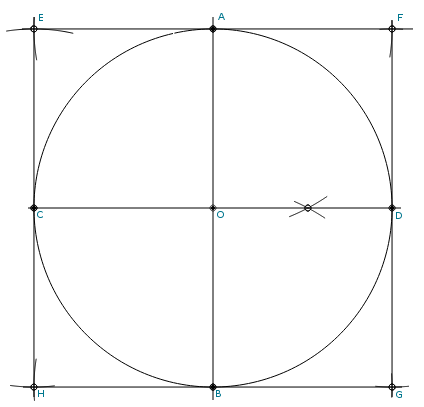

Construction of a Circumscribed Square with Compass and Straightedge

Steps:
- Draw circle with radius R centered at point O.
- Draw a diamater, intersecting the circle at points A and B.
- Create a perpendicular line to AB at point O, intersecting the circle at points C and D.
- With compass set to radius R, center compass on points A and C and construct point E.
- Center compass on points A and D and construct point F.
- Center compass on points B and D and construct point G.
- Center compass on points B and C and construct point H.
- Points E, F, G, and H form the circumscribed square.